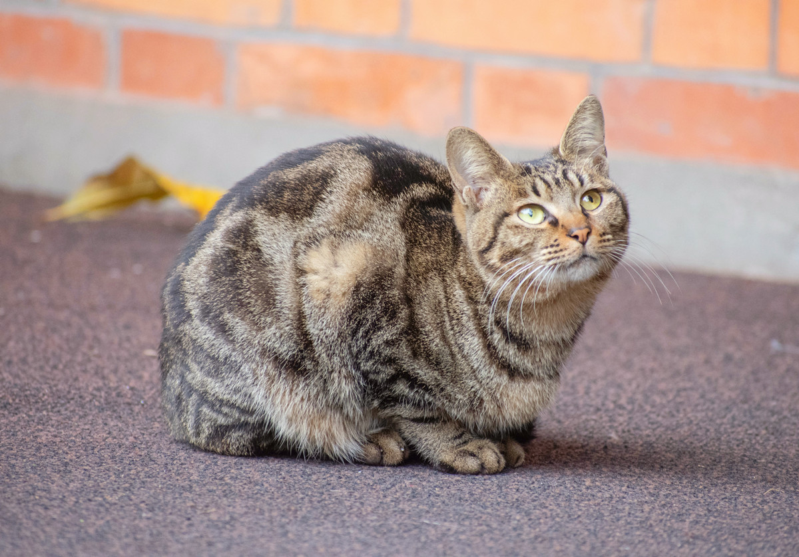

1. Shorthair cats
Short hair, neat and smooth, fine texture, strong bones, agile, with the characteristics of the wild, easy daily care, understand the human language, gentle and close to people, as a companion animal, particularly popular.
Shorthair cat breeds are more distributed almost around the world, the main breeds are as follows.
British Shorthair, American Shorthair, European Shorthair, Oriental Shorthair, Siamese, Curly Cat (four breeds), Burmese (divided into American Burmese and European Burmese), Havana Cat, Singapore Cat, Manx Cat (Isle of Man Cat), Egyptian Cat, Bengal Cat, Scottish Fold, American Curly Ear, California Shining Cat, Canadian Hairless Cat (Sphinx Cat), Japanese Shorthair, Korat Cat, Abyssinian Cat, Bombay Cat, Russian Blue Cat, Asian Cat Group (including Pomera Cat)
2. Long-haired cats
The fur is 5-10cm long, soft and smooth, and varies slightly depending on the season. Beautiful body, steady movement; gentle character, strong dependence, like to be close to people; soft bark, like to pamper in front of the master. Although the fur needs to be groomed every day and will lose a lot of hair in early summer. Daily care is a little laborious, but as a companion animal, it is also much loved by people.
The main breeds of long-haired cats are as follows.
Persian cat (British longhair), Chinchilla, Himalayan cat, (generally speaking, Chinchilla and Himalayan cats are considered a kind of Persian cat) Maine cat, Burman cat, Angora cat, Turkish Van cat, Norwegian forest cat, Siberian cat, Ragdoll cat, Somali cat
